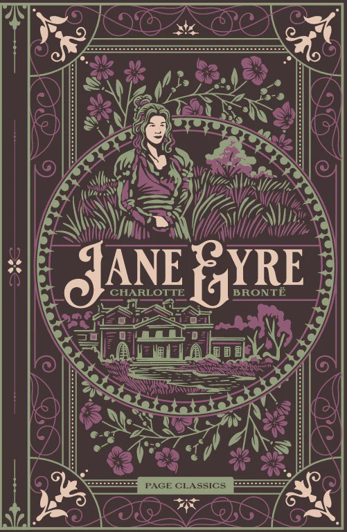
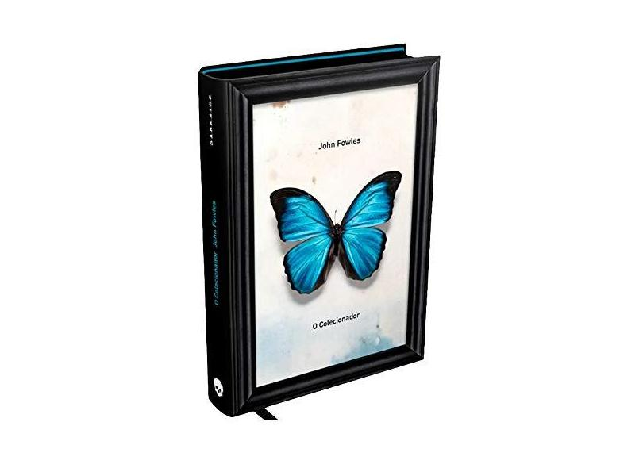
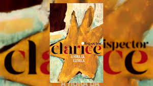

Noites Brancas
Fiódor Dostoiévski
★★★★★
Bia
Esse livro é incrivel, leve e tranquilo. Eu espera por esse final.
Esse livro é incrivel, leve e tranquilo. Eu espera por esse final.

Esse é o melhor livro que eu já li. Mesmo não estando completo ele consegue transmitir muito bem os sentimentos.

Meu livro preferido. Não gosto muito do Rochester, mas amo a Jane, ela é muito humana.

O melhor livro de suspense do mundo. Esse livro me deixa arrepiada de tão bem escrito.

Essa autora é incrível! Esse livro é trite mas vale a pena.

Essa autora é incrível! Esse livro é bem interessante.

Que livro bosta.

Lindo. Nuca vi um livro tão triste, realista e bem escrito.